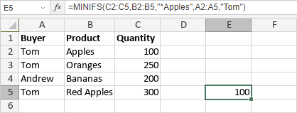

MINIFS funkcija
MINIFS funkcija je jedna od statističkih funkcija. Koristi se za vraćanje najmanje vrednosti među ćelijama koje zadovoljavaju određene uslove ili kriterijume.
Sintaksa
MINIFS(min_range, criteria_range1, criteria1, [criteria_range2, criteria2], ...)
MINIFS funkcija ima sledeće argumente:
| Argument | Opis |
|---|---|
| min_range | Opseg ćelija u kojem će se određivati najmanja vrednost. |
| criteria_range1 | Prvi odabrani opseg ćelija na koji se primenjuje criteria1. |
| criteria1 | Prvi uslov koji mora biti ispunjen. Primjenjuje se na criteria_range1 i određuje koje ćelije u min_range će se uzeti u obzir za najmanju vrednost. |
| criteria_range2, criteria2 | Dodatni opsezi ćelija i odgovarajući kriterijumi. Ovi argumenti su opciona. |
Napomene
Možete koristiti wildcard karaktere prilikom definisanja kriterijuma. Upitnik "?" može zameniti bilo koji pojedinačni karakter, a zvezdica "*" može zameniti bilo koji broj karaktera.
Kako primeniti MINIFS funkciju.
Primeri
Slika ispod prikazuje rezultat koji vraća MINIFS funkcija.
